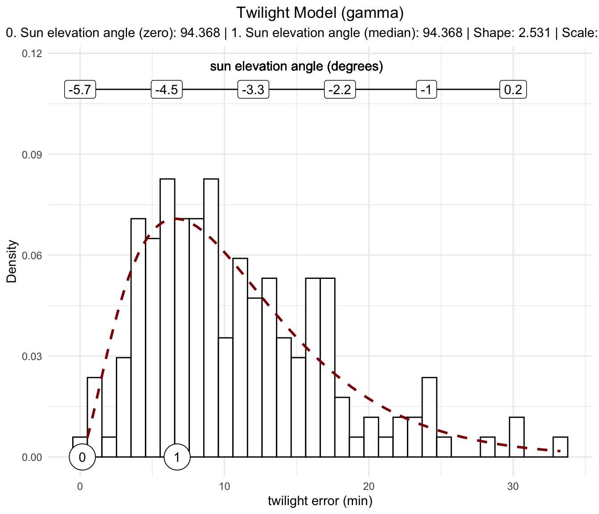
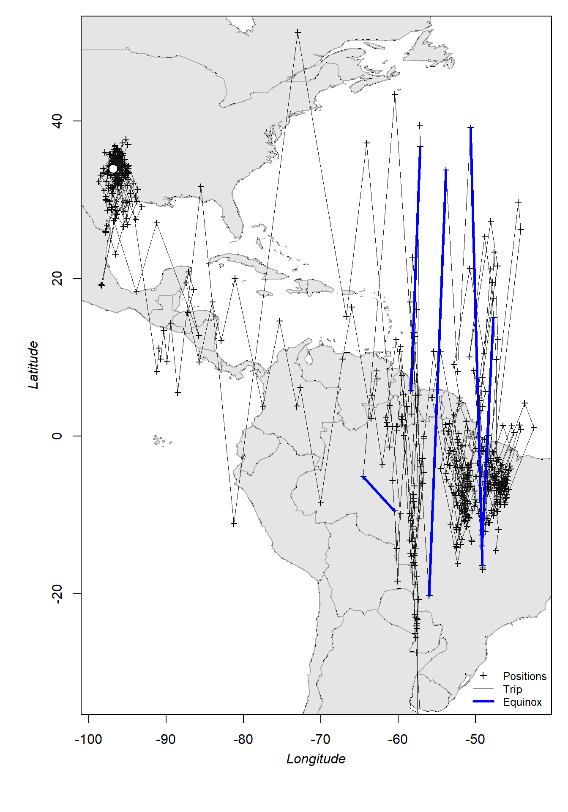
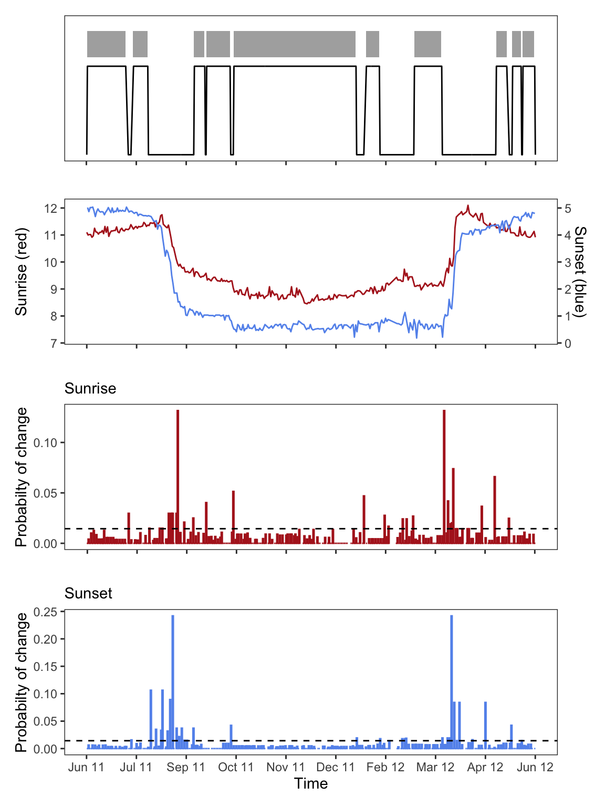
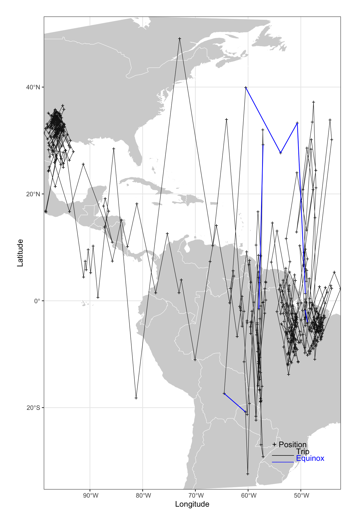
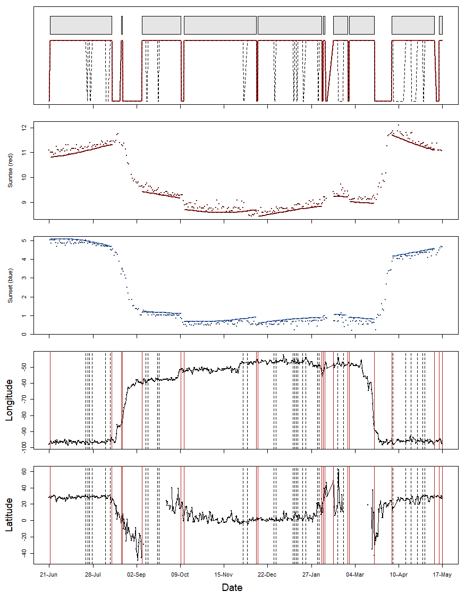
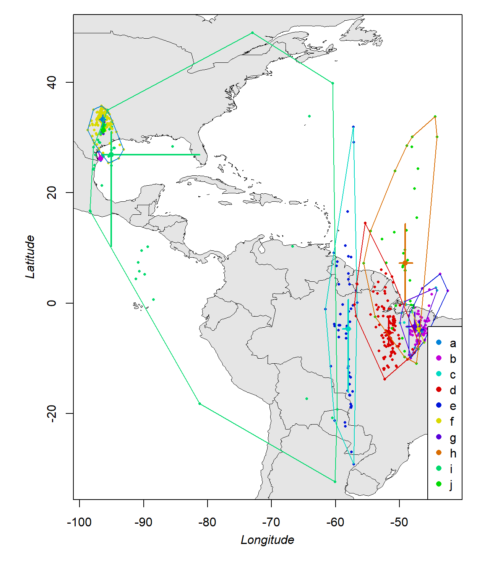

Chapter 5 GeoLight
GeoLight uses the threshold method to estimate simple discrete locations per set of twilight events. It was developed in 2012 with the goal of being a complete, quick, and reproducible method of geolocator analysis Lisovski & Hahn 2012. Over time, GeoLight has been further developed and functions such as mergeSites, mergeSites2 and siteEstiamte were added. These functions make use of a very simple movement analysis that aims to separate periods of movement from periods of residency by finding changes in the recorded sunrise and sunset times. Investigating entire stationary periods and estimating a single location (e.g., for all sunrise and sunset times during the major non-breeding period when the bird was stationary) using a optimization procedure (maximum likelihood) we can both, refine location estimates and estimate credible intervals around the most likely location. Even with these new functions, GeoLight is still a tool that uses simple principles and requires low computing capacity. It also allows for a quick analysis (that should be thoroughly checked if used for publications) and is thus an analysis tool by itself but can also be used as an initial step before going into the more sophisticated and complex approaches like SGAT or FLightR.
Getting started
To illustrate the GeoLight analysis, we use the Purple martin dataset.
We first define the metadata and read in the raw recordings. We skip the twilight definition process but read in the file that has been generated using preprocessLight.
Species <- "PasCir"
ID <- "PasCir01"
lat.calib <- 33.9
lon.calib <- -96.8
wd <- "data"
raw <- readLig(paste0(wd, "/RawData/", Species, "/", ID, ".lig"))
raw$Light <- log(raw$Light)
twl <- read.csv(paste0(wd, "/Results/", Species, "/", ID, "_twl.csv"))
twl$Twilight <- as.POSIXct(twl$Twilight, tz = "GMT")Let’s have a look at the dataset using the lightImage function from TwGeos.
offset <- 17 # adjusts the y-axis to put night (dark shades) in the middle
lightImage( tagdata = raw,
offset = offset,
zlim = c(0, 4))
tsimagePoints(twl$Twilight, offset = offset, pch = 16, cex = 1.2,
col = ifelse(twl$Deleted, "grey20", ifelse(twl$Rise, "firebrick", "cornflowerblue")))
As you can see, there are many twilight events that are marked as deleted. Therefore, we have to subset out twilight table.
 GeoLight requires a certain input format of the twilight table that differs from the ouput of e.g.
GeoLight requires a certain input format of the twilight table that differs from the ouput of e.g. preprocessLight or TAGS. We need to have rows that always have a set of twilight times, e.g. sunrise and sunset of a day or sunset and sunrise of a night. The first columns (and the first twilight) is called tFirst, the second tSecond and the third column type defines whether it is a day (1) or a night (2). The function export2GeoLight can transform the table from above (twl) into the required format.
tFirst tSecond type
1 2011-06-21 11:06:22 2011-06-22 02:01:18 1
2 2011-06-22 02:01:18 2011-06-22 11:00:25 2
3 2011-06-22 11:00:25 2011-06-23 01:52:21 1
4 2011-06-23 01:52:21 2011-06-23 11:01:08 2
5 2011-06-23 11:01:08 2011-06-24 02:01:44 1
6 2011-06-24 02:01:44 2011-06-24 11:01:08 2Calibration
From the image above, we see that there are two clear periods when the birds has been at the release/recapture site. We can use either one period or both. Given that calibration is best if we use as many twilight times as possible, we here use both periods. We again use the ligthImage and plot the sunrise/sunset curve of the deployment site. Then we play with the dates and add lines until we are satisfied with the calibration periods.
 It is most important to not include any periods when the birds has not been at the known location since that can totally screw the calibration. Thus, it is preferred have a buffer to the departure/arrival.
It is most important to not include any periods when the birds has not been at the known location since that can totally screw the calibration. Thus, it is preferred have a buffer to the departure/arrival.
lightImage( tagdata = raw,
offset = offset,
zlim = c(0, 4))
tsimageDeploymentLines(twl$Twilight, lon.calib, lat.calib, offset = offset,
lwd = 2, col = adjustcolor("orange", alpha.f = 0.8))
tm1 <- c(as.POSIXct("2011-06-25"), as.POSIXct("2011-08-10"))
tm2 <- c(as.POSIXct("2012-04-15"), as.POSIXct("2012-05-30"))
abline(v = tm1, lty = c(1,2), col = "firebrick", lwd = 1.5)
abline(v = tm2, lty = c(1,2), col = "firebrick", lwd = 1.5)
We can now subset the twilight table twl.gl.
The method behind the calibration function getElevation in GeoLight has changed over time and is now based in the error distribution (the variation) of the detected twilight times during the calibration period.
a1 e0 shape scale
93.8281938 -5.6759414 2.5305391 0.2317587 
The figure above represents a nice calibration curve; the twilight error indicating the deviation from the true twilight events in minutes follows quite nicely a gamma distribution (the red dotted line). The function provides four numbers. The first one is the reference sun elevation angle (the round dot with the 1) that can be used to calculate the threshold locations. This reference angle is based on the median of the twilight error distribution, minimizing the accuracy of the location estimates (not the precision that is affected by the variability in twilight events). The second value in the output is the sun elevation angle that defines the zero deviation and thus the lowest sun elevation angle a twilight could be detected. This sun elevation angle is important in the mergeSites2 function but is also used in the e.g. SGAT analysis.
 The graph produced by
The graph produced by getElevation can help to judge whether your calibration data is sufficiently long and whether it is correct. A twilight error that fits the gamma distribution is a good sign, that you have enough data for your calibration. In case you have a few bars only, the fit is poor, and your time series is probably too short. You can also use a log-normal error distribution (method = “log-norm”), in some cases this results in a better fit. Additionally, if you see a few values at zero deviation and a big gap between them and the next junk of data points you have most likely included a period that was not recorded at the known location or you have falsely defined twilight events that are earlier/later than the logger is able to detect light (go back to the twilight annotation and have a thorough look at the data).
Location estimation
We can now calculate the locations and have a fist look at a map by using the implemented tripMap function.
crds <- coord(twl.gl, degElevation = 90-gE[1], note = FALSE)
gg_tripMap <- tripMap(crds, xlim = c(-98.75, -42.4), ylim = c(-32, 50))point_sf <- dplyr::tibble(lon = lon.calib, lat = lat.calib) %>%
st_as_sf(coords = c('lon', 'lat'), crs = 4326) %>% st_as_sfc()
ven the crude location estimates of the simple threshold method provide useful information and we get a feeling of the track, the major non-breeding sites and potentially the stopover locations. We also the huge jumps, notably during migration that is most likely influenced by the equinox. However, large north-south jumps are also an indication of rapid east-west movements.
Hill-Ekstrom calibration
GeoLight has tools to make simple adjustments and refine the location estimates. First, we can use alternative calibration methods to see if the calibration at the known site is actually representative for the twilight error during the entire year. Assuming a fixed sun elevation angle is often not correct. Birds may behave very different during the breeding season and my use different habitat (more open or more in the vegetation). There is a good chance that this is unknown and that we cannot investigate if that is indeed the case and we have therefore make the assumption that it is the same as during the calibration period (simply assuming that is different without evidence from data is not recommended). However, in some cases we can use the s called Hill-Ekstrom calibration to estimate a reference sun elevation angle from stationary periods at unknown location. The Hill-Ekstrom calibration, is based on the theory that the precision in latitude estimates of a stationary period is highest (lowest variation) if the correct sun elevation angle has been chosen (see Lisovski et al. 2012 for more details). We can thus define stationary periods and estimate latitude using a range of sun elevation angles and see which one result in the lowest variation in latitudes.
GeoLight offers a tool to distinguish between periods of movement and periods of residency. The changeLight function uses the twilight times (not the location estimates) that are unaffected by e.g. the equinox and searches for sudden changes that indicate changes in the location of the animal.
If we are simply interested in a long stationary period outside the deployment/release location we can use very conservative parameters, e.g. low values for the quantile. This means that we except changes with a relatively low likelihood (e.g. 0.75).
Play with the settings and you will see how this changes the separation of periods (upper panel)

Besides other information, the changeLight function returns a vector with the sites cL$site that we can use to subset the twilight table for the e.g. longest period (in this case stationary period Nr. 5). Important, the function we use to run the Hill-Ekstrom calibration, findHEZenith, is from the TwGeos package and requires the twilight table with all twilight in one column called Twilight, and the information on whether it is a sunrise or a sunset in a second column called Rise, e.g. the output from the preprocessLight function. Using the output of the change-point analysis we can define the start and the end of the long stationary period. It is however recommended to reduce the stationary period by a couple of days at each side. This makes sure that potential movement that can be mis-identified at the transition between real movements and stopover behavior are not part of the analysis.
StartEnd <- range(which(twl$Twilight>=(min(twl.gl$tFirst[cL$site==5])+5*24*60*60) &
twl$Twilight<=(max(twl.gl$tFirst[cL$site==5])+5*24*60*60)))
HE <- findHEZenith(twl, range = StartEnd)
In the plots above, you see the calculated latitudes of the entire tracking period. The latitudes have been calculated using a while range of sun elevation angels. The lower graph has the most important information; the standard deviation of the latitudes from the selected stationary period over the used zenith angle. In this case there is a clear minima (a sign that the Hill-Ekstrom calibration is working) at 94.25 degrees. We will discuss the issue of having different references for the sun elevation angle (e.g. sun elevation angle vs. zenith angle) in the SGAT section. Here, we simply transfer the zenith to sun elevation angle: 94.25 = -4.25. That means, that the optimal sun elevation angle for this period is 0.5 degrees higher than the one we estimated for the calibration period. This is not massive but still a significant difference probably explained by the non-breeding site being close to the equator with higher likelihood of clouds than in e.g. south of the US.
So, let’s use this reference sun elevation angle to calculate the locations.
Note: Out of 592 twilight pairs, the calculation of 25 latitudes failed (4 %)Movement analysis
We have now put sufficient effort into the calibration and are ready to continue with the movement analysis. We again use the changeLight function but it is very important to adjust the settings until you are satisfied, and you are sure that you used a quantile value and a certain number of days (minimum days to define a stationary period), that results in a good separation between movement and resident behavior. Most importantly, you want to make sure that all movement are detected. Don’t worry of the analysis detect too many movements, we will deal with that later. The likelihood of changes (lower barplots) are relative to the biggest change. Thus, if you have strong outliers in your twilight table (false twilight times) the analysis is biased towards these outliers and you should go back to the twilight annotation process and remove strong outliers. In some cases the likelihood of changes and the variability in twilight events is very different between sunrise and sunset, if that is the case define a threshold for sunrise and sunset separately (see ?changeLight for details).

These settings seem to detect all changes that are obviously visible (and more). We can now use mergeSites to refine this selection and to merge consecutive sites if they are only separated by single large errors in the twilight times but are otherwise likely to be at the same site. mergeSite uses a maximum likelihood fit to optimize longitude and latitude for each stationary period. However, the error term is modeled using a Gaussian distribution and that is certainly wrong. However, the analysis often returns good results and even good estimates of the most likely location and the credible intervals. The mergeSites2 function is a further development and uses the correct assumptions (it also replaces the function siteEstimation). We can use the twilight error parameters and the reference angle that we have calculated using the getElevation function. The mergeSites2 function evaluates the likelihood surface for each stationary period, starting from the first one and compares the most likely location and the 95% credible interval with the most likely location and the credible intervals of the next stationary site. If the most likely locations are smaller than the distThreshold and the 95% credible intervals overlap, the site is merged and the process starts again from the new merged period to the next period. Additionally, we can use a simple masking option to prevent locations from beeing on land or at sea. The function requires some calculation power and can take several minutes to complete.
The function returns the updated vector of the sites as well as the locations estimated using the maximum likelihood approach.
…
## may take several minutes to complete
mS <- mergeSites2(twl = twl.gl, site = cL$site,
distThreshold = 500,
degElevation = gE[2]-0.75, # the HE corrected zero sun elevation angle
alpha = gE[3:4], method = "gamma", # parameters and model of the twilight errro
mask = "land") # mask option
The plot created by mergeSites2 is similar to what we know from changeLight. However, the top panel shows which of the original sites were merged (red lines around dotted lines), and the same is shown for the longitude and latitude estimates in the two bottom panels. The middle panel shows the sunrise and sunset times recorded by the geolocator and the fitted sunrise and sunset times (lines) of the most likely location.
We can now plot the results, using the longitude and latitude estimates of mergeSites2.
world <- rnaturalearth::ne_countries(scale = "medium", returnclass = "sf")
world <- world %>%
st_as_sfc()
## create a color scale for stationary sites dependent on data
Seasonal_palette <- grDevices::colorRampPalette(grDevices::hsv(1 - ((1:365) + (365/4))%%365/365, s = 0.8, v = 0.8),
space = "Lab")
### replace first and last estimate with the deployment/retrieval location
sm <- mS$summary
sm[c(1,nrow(sm)), 2:3] <- matrix(c(lon.calib, lat.calib), ncol = 2, nrow = 2, byrow = T)
sm[c(1,nrow(sm)), -c(1:3)] <- NA
sm <- as.data.frame(sm)
day <- as.POSIXlt(aggregate(mS$twl$tFirst[mS$site>0], by = list(mS$site[mS$site>0]), FUN = median)$x,
origin = "1970-01-01", tz ="GMT")$yday
stp <- as.numeric(aggregate(mS$twl$tFirst[mS$site>0], by = list(mS$site[mS$site>0]), FUN = function(x) x =
difftime(x[length(x)],x[1], units = "days"))$x)
## scale point of stationary periods according to the time spent on the site
cexf <- approxfun(range(stp), c(3, 9), rule = 3)
plot(NA, xlim = range(sm[,c(2,4:7)], na.rm = TRUE)+c(-2,2), ylim = range(sm[,c(3,8:10)], na.rm = T)+c(-2,2),
type = "n", bty = "n", mgp = c(3,2,1), xlab = "", ylab = "", las = 1)
plot(wrld_simpl, add = T, col = "grey90", border = "grey90")
lines(sm[,2], sm[,3], lwd = 2, lty = 2)
arrows(sm[,2], sm[,8], sm[,2], sm[,11], lwd = 0.8, length = 0, col = adjustcolor("black", alpha.f = 0.6))
arrows(sm[,2], sm[,9], sm[,2], sm[,10], lwd = 2, length = 0)
arrows(sm[,4], sm[,3], sm[,7], sm[,3], lwd = 0.8, length = 0, col = adjustcolor("black", alpha.f = 0.6))
arrows(sm[,5], sm[,3], sm[,6], sm[,3], lwd = 2, length = 0)
arrows(sm[,4], sm[,3], sm[,5], sm[,3], lwd = 1.2, length = 0)
points(sm[,2], sm[,3], pch = 21, cex = c(1, cexf(stp[-c(1, length(stp))]), 1), bg = Seasonal_palette(365)[day], lwd = 2)
text(sm[,2], sm[,3], 1:nrow(sm),
col = c("transparent", rep(0, nrow(sm)-2), "transparent"))
mapplots::add.pie(x = -90, y = -28, z = rep(1, 12), radius = 10, col = Seasonal_palette(12), init.angle = day[1])
In comparison, we can use the sites vector and plot all location estimates grouped into the sites using the siteMap function.
siteMap(crds, site = mS$site, type = "points", xlim = range(crds[,1], na.rm = T), ylim = range(crds[,2], na.rm = T))
siteMap(crds, site = mS$site, type = "cross", add = TRUE)

Finally, we can extract the migration schedule:
Site Arrival Departure
1 a <NA> 2011-08-15 06:19:26
2 b 2011-08-23 17:45:38 2011-08-24 17:33:56
3 c 2011-09-10 15:57:53 2011-10-13 15:12:18
4 d 2011-10-16 15:13:16 2011-12-21 03:04:10
5 e 2011-12-24 03:05:43 2012-02-21 03:51:46
6 f 2012-02-22 15:41:47 2012-02-24 03:28:56
7 g 2012-02-27 15:28:11 2012-03-10 03:23:43
8 h 2012-03-11 15:21:08 2012-04-01 05:57:45
9 i 2012-04-19 18:17:44 2012-04-20 18:29:36
10 j 2012-05-01 06:22:19 2012-05-25 06:24:14
11 k 2012-05-28 06:18:37 <NA>
The temporal resolution of a GeoLight analysis is very low. And while high quality data may produce exact timing, the extracted dates should only be seen as approximate departure and arrival dates that can have errors of plus/minus two days.
My own contribution: I like GeoLight!